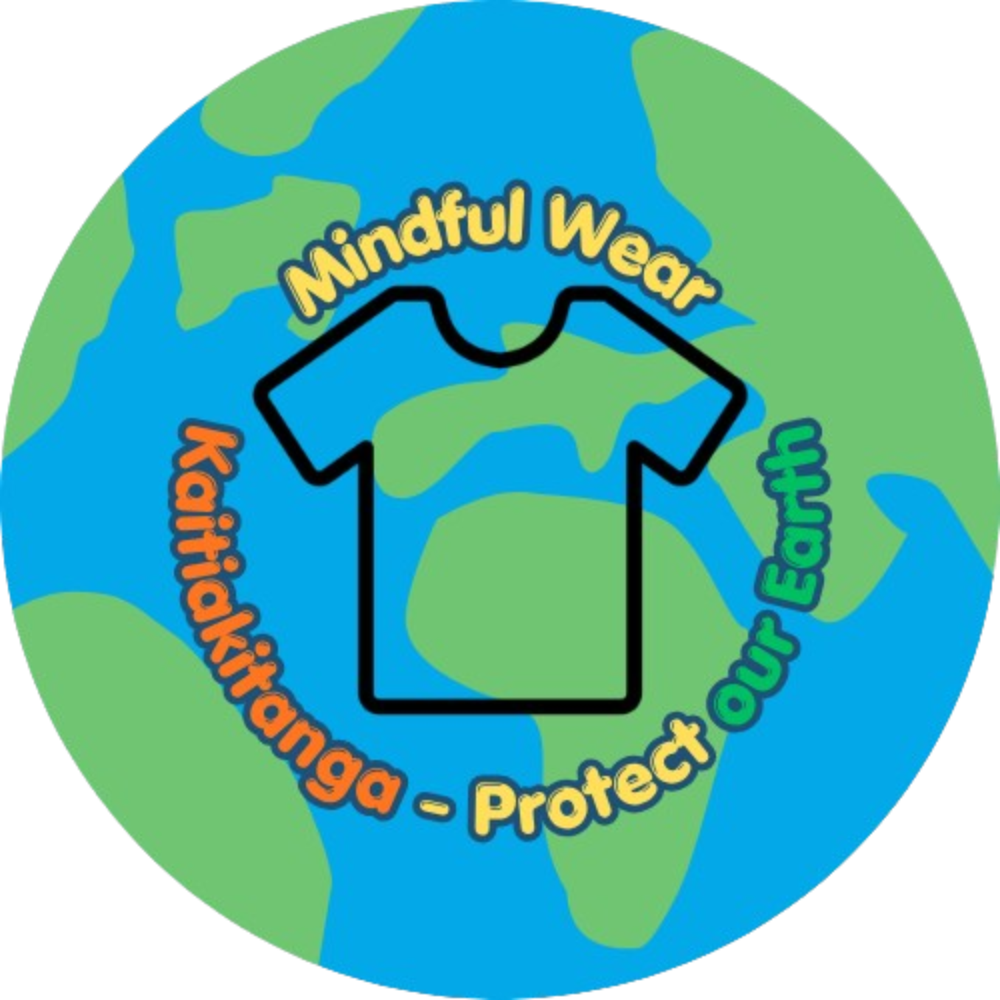
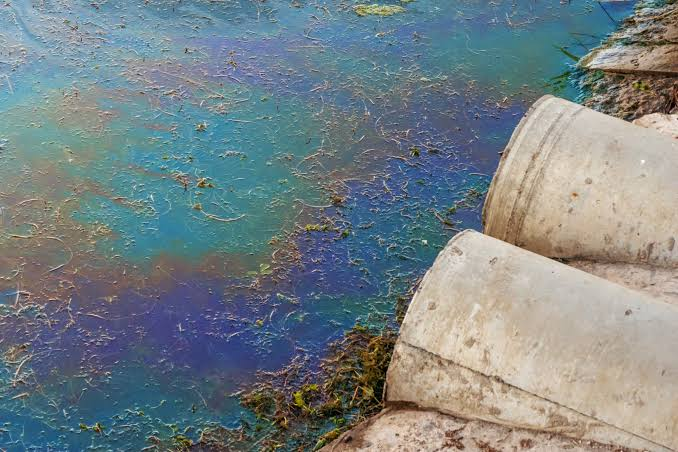
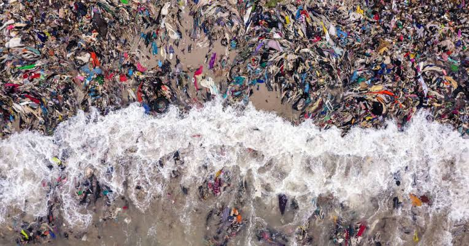
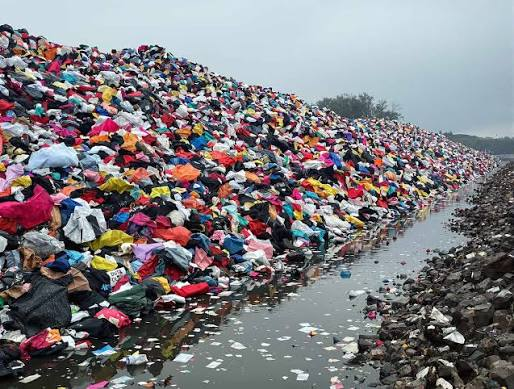
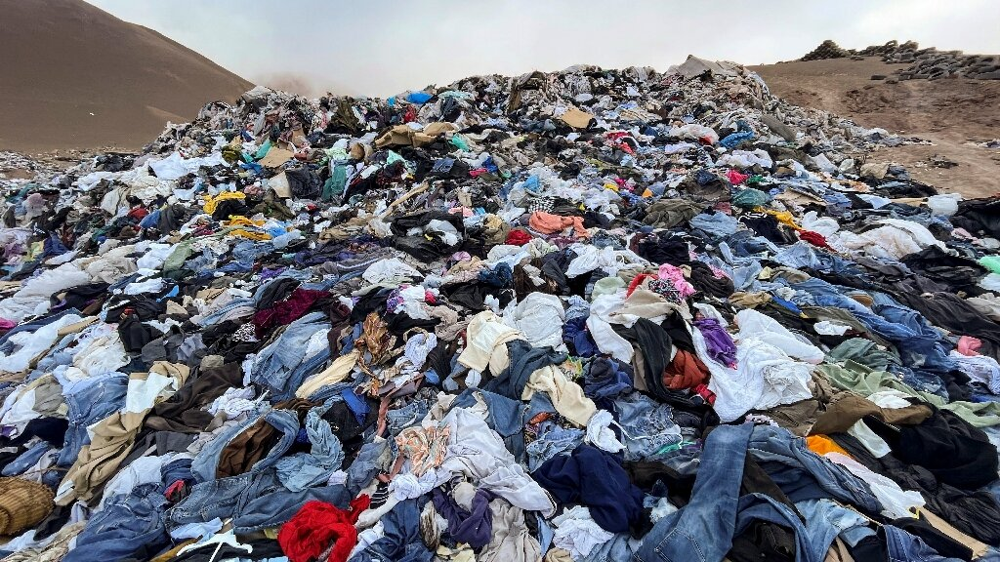

Fast fashion is the production of cheap clothing that is made quickly to keep up with the latest trends. This allows people to buy new clothes at low prices, but it can have serious effects on the environment.
The production of clothing uses large amounts of water. Dyes and chemicals used to make clothes can also enter rivers and waterways, which can harm wildlife and pollute the environment.

Credit to Open Access Government
Credit to Ocean Life EducationFast fashion can lead to large amounts of clothing being thrown away. Many unwanted clothes end up in landfills, where they can take a long time to break down and contribute to the growing amount of waste.

Credit to New England Woolens
Credit to Phys.orgMaking and transporting clothing uses energy and produces greenhouse gases. The large amount of clothing produced by the fast fashion industry contributes to carbon emissions and climate change.
Fast fashion can make clothing more affordable and accessible, but the environmental costs can be significant. Understanding these impacts can help people make more thoughtful decisions about the clothes they buy and how long they keep them.